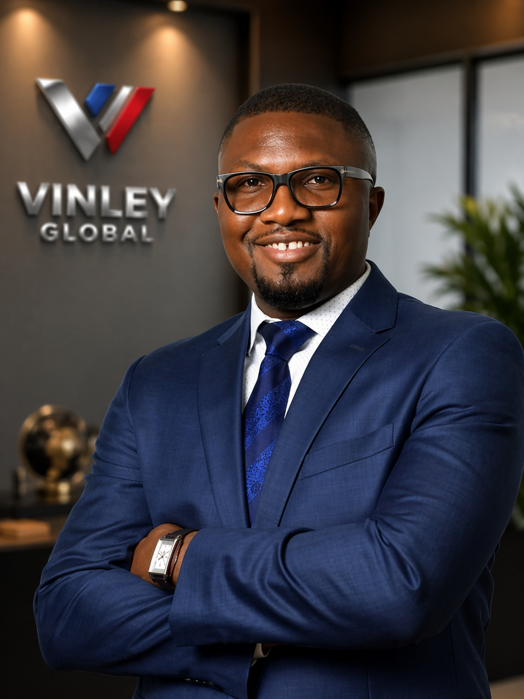

Stan Abada
CEO / Managing Director, Vinley Global Ltd
Stan Abada leads Vinley Global with an operator’s mindset—combining engineering depth with disciplined execution to deliver complex projects responsibly, efficiently, and with long-term value in focus.
Stan Abada serves as Chief Executive Officer and Managing Director of Vinley Global Ltd, where he provides strategic direction and executive oversight across the firm’s engineering, infrastructure, and integrated technology platforms. His leadership centers on institutional discipline, risk governance, and long-term value creation, positioning the company as a credible execution partner across complex and high-impact engagements.
With a background spanning engineering systems, program governance, and enterprise operations, Stan brings a structured approach to organizational leadership. He has guided multi-disciplinary teams through technically demanding environments by establishing clear operating frameworks, defined accountability structures, and measurable performance standards. His leadership philosophy emphasizes clarity of mandate, stakeholder alignment, and operational resilience.
Under his stewardship, Vinley Global advances initiatives across infrastructure delivery, industrial systems, engineering consulting, and strategic partnerships. He is responsible for corporate strategy, capital allocation discipline, institutional relationships, and enterprise-wide governance controls. His focus remains on sustainable expansion supported by prudent oversight and execution rigor.
Stan’s academic foundation reflects a deliberate integration of engineering depth and executive strategy. He holds a Master of Science in Business Analytics from Wake Forest University and a Master of Business Administration from University of South Florida. He also completed a Certificate in Management Science and Engineering at Stanford University. His technical education includes both a Master of Science and a Bachelor of Science in Electrical Engineering from Florida Institute of Technology. This multidisciplinary background informs his systems-oriented approach to institutional leadership and decision-making.
As Managing Director, his mandate is to ensure that Vinley Global operates with structural integrity, disciplined execution, and a governance framework capable of supporting long-term institutional growth.